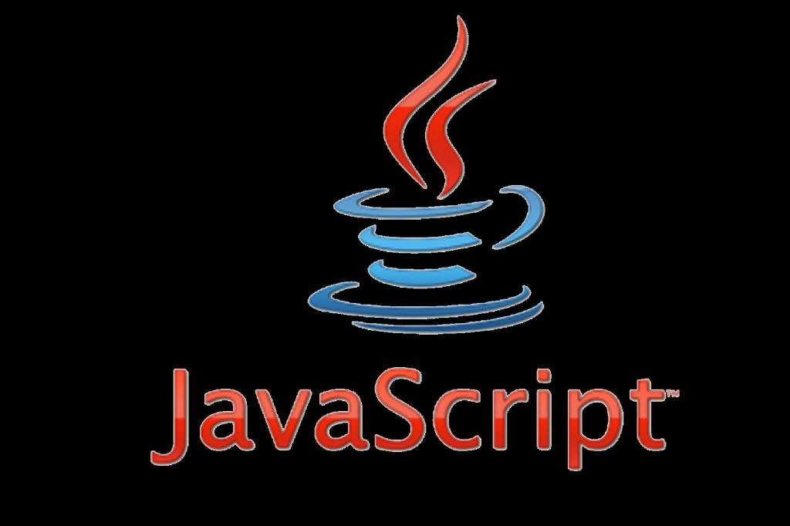

Перед Бренданом Эйхом, нанятым в компанию Netscape 4 апреля 1995 года[18], была поставлена задача внедрить язык программирования Scheme или что-то похожее в браузер Netscape. Поскольку требования были размыты, Эйха перевели в группу, ответственную за серверные продукты, где он проработал месяц, занимаясь улучшением протокола HTTP [18]. В мае разработчик был переброшен обратно, в команду, занимающуюся клиентской частью (браузером), где он немедленно начал разрабатывать концепцию нового языка программирования. Менеджмент разработки браузера, включая Тома Пакина (англ. Tom Paquin), Михаэля Тоя[en], Рика Шелла (англ. Rick Schell), был убеждён, что Netscape должен поддерживать язык программирования, встраиваемый в HTML-код страницы[19].
Помимо Брендана Эйха, в разработке участвовали[18] сооснователь[20] Netscape Communications Марк Андрессен и сооснователь Sun Microsystems Билл Джой: чтобы успеть закончить работы над языком к релизу браузера, компании заключили соглашение о сотрудничестве в разработке [21]. Они ставили перед собой цель обеспечить «язык для склеивания» составляющих частей веб-ресурса: изображений, плагинов, Java-апплетов, который был бы удобен для веб-дизайнеров и программистов, не обладающих высокой квалификацией [18].
Первоначально по предложению Марка Андрессена[22] язык был назван Mocha [23][24][25], был реализован Бренданом Эйхом в течение десяти дней и впервые был включен в пре-альфу версию Netscape 2[22]. Затем он был переименован в LiveScript[25][26] и предназначался как для программирования на стороне клиента, так и для программирования на стороне сервера (там он должен был называться LiveWire)[21]. На синтаксис оказали влияние языки Си и Java, и, поскольку Java в то время было модным словом[18][21], 4 декабря 1995 года LiveScript переименовали в JavaScripta [27], получив соответствующую лицензию у Sun. Анонс JavaScript со стороны представителей Netscape и Sun состоялся накануне выпуска второй бета-версии Netscape Navigator[18]. В нём декларируется, что 28 лидирующих ИТ-компаний выразили намерение использовать в своих будущих продуктах JavaScript как объектный скриптовый язык с открытым стандартом [28].
В 1996 году компания Microsoft выпустила аналог языка JavaScript, названный JScript. Анонсирован этот язык был 18 июля 1996 года [29]. Первым браузером, поддерживающим эту реализацию, был Internet Explorer 3.0.
По инициативе компании Netscape [30][31] была проведена стандартизация языка ассоциацией ECMA. Стандартизированная версия имеет название ECMAScript, описывается стандартом ECMA-262. Первой версии спецификации соответствовал JavaScript версии 1.1, а также языки JScript и ScriptEasy [13][21].
Популярность
В статье «The World’s Most Misunderstood Programming Language Has Become the World’s Most Popular Programming Language» [32] (с англ. — «Самый неправильно понятый язык программирования в мире стал самым популярным в мире языком программирования») Дуглас Крокфорд утверждает, что лидирующую позицию JavaScript занял в связи с развитием AJAX, поскольку браузер стал превалирующей системой доставки приложений. Он также констатирует растущую популярность JavaScript, то, что этот язык встраивается в приложения, отмечает значимость языка.
Согласно TIOBE Index, базирующемуся на данных поисковых систем Google, MSN, Yahoo!, Википедия и YouTube, в апреле 2015 года JavaScript находился на 6-м месте (год назад — на 9-м) [33].
По данным Black Duck Software [en][34], в разработке открытого программного обеспечения доля использования JavaScript росла. 36 % проектов, выпуски которых состоялись с августа 2008 по август 2009 года, включают JavaScript, наиболее часто используемый язык программирования с быстрорастущей популярностью. 80 % открытого программного обеспечения использует Си, C++, Java, Shell и JavaScript. При этом JavaScript — единственный из этих языков, чья доля использования увеличилась (более чем на 2 процента, если считать в строках кода) [35].
JavaScript является самым популярным языком программирования, используемым для разработки веб-приложений на стороне клиента[en][36][37].
Возможности языка
JavaScript является объектно-ориентированным языком, но используемое в языке прототипирование [38][39] обуславливает отличия в работе с объектами по сравнению с традиционными класс-ориентированными языками. Кроме того, JavaScript имеет ряд свойств, присущих функциональным языкам — функции как объекты первого класса, объекты как списки, карринг, анонимные функции, замыкания [40] — что придаёт языку дополнительную гибкость.
Несмотря на схожий с Си синтаксис, JavaScript по сравнению с языком Си имеет коренные отличия:
В языке отсутствуют такие полезные вещи[41], как:
Семантика и синтаксис
Синтаксис языка JavaScript во многом напоминает синтаксис Си и Java, семантически же язык гораздо ближе к Self,
Smalltalk или даже Лиспу[32][42][Спецификация 2].
В JavaScript:
Встраивание в веб-страницы
Расположение внутри страницы
Для добавления JavaScript-кода на страницу можно использовать теги <script> </script>[Спецификация 6], которые рекомендуется, но не обязательно, помещать внутри контейнера <head>. Контейнеров <script> в одном документе может быть сколько угодно.Атрибут type = "text/javascript" указывать необязательно, данное значение используется по умолчанию [56]. Скрипт, выводящий модальное окно с классической надписью «Hello, World!» внутри браузера:
<script type="application/javascript">
alert(='Hello, World!');
</script>
Расположение внутри тега
Спецификация HTML описывает набор атрибутов, используемых для задания обработчиков событий [Спецификация 7]. Пример использования:
<a href="delete.php" onclick="confirm('Вы уверены?'); return false;"> Удалить </a>
В приведённом примере при нажатии на ссылку функция confirm('Вы уверены?'); вызывает модальное окно с надписью «Вы уверены?», а return false; блокирует переход по ссылке. Разумеется, этот код будет работать только если в браузере есть и включена поддержка JavaScript, иначе переход по ссылке произойдёт без предупреждения.
Использование кода JavaScript в контексте разметки страницы расценивается в рамках ненавязчивого JavaScript как плохая практика. Аналогом (при условии снабжения ссылки идентификатором alertLink)
<a id="alertLink"> Удалить </a>приведённого примера может являться, например, следующий фрагмент JavaScript:
window.onload = () => {
const linkWithAlert = document.getElementById('alertLink');
linkWithAlert.addEventListener('click', async () => {
if (confirm('Вы уверены?')) {
await fetch('delete', {method: 'DELETE'})
}
})
};
| Rank | Movie | Downloads | Grosses |
|---|---|---|---|
| torrentfreak.com | |||
| 1 | Fast Five | 9,260,000 | $626,137,675 |
| 2 | The Hangover II | 8,840,000 | $581,464,305 |
| 3 | Thor | 8,330,000 | $449,326,618 |
| 4 | Source Code | 7,910,000 | $123,278,618 |
| 5 | I Am Number Four | 7,670,000 | $144,500,437 |
| 6 | Sucker Punch | 7,200,000 | $89,792,502 |
| 7 | 127 Hours | 6,910,000 | $60,738,797 |
| 8 | Rango | 6,480,000 | $245,155,348 |
| 9 | The King’s Speech | 6,250,000 | $414,211,549 |
| 10 | Harry Potter and the Deathly Hallows Part 2 | 6,030,000 | $1,328,111,219 |
| Rank | Movie | Downloads | Grosses |
|---|---|---|---|
| torrentfreak.com | |||
| 1 | Fast Five | 9,260,000 | $626,137,675 |
| 2 | The Hangover II | 8,840,000 | $581,464,305 |
| 3 | Thor | 8,330,000 | $449,326,618 |
| 4 | Source Code | 7,910,000 | $123,278,618 |
| 5 | I Am Number Four | 7,670,000 | $144,500,437 |
| 6 | Sucker Punch | 7,200,000 | $89,792,502 |
| 7 | 127 Hours | 6,910,000 | $60,738,797 |
| 8 | Rango | 6,480,000 | $245,155,348 |
| 9 | The King’s Speech | 6,250,000 | $414,211,549 |
| 10 | Harry Potter and the Deathly Hallows Part 2 | 6,030,000 | $1,328,111,219 |
Список использованных тегов:
a, h1, h2, ul, ol, li, ins, body, p, img,
strong, em, b, pre, center, head, html, span, table, tr,
th, tfoot, tbody, thead, caption, i, meta, title, link, br,
big, small, sub, sup, del, hr, dd, dt, dl
Список использованных свойств:
font-family, font-size, font-weight, text-align, font-style, float,
color, margin, border-collapse, padding,background, text-transform,
border-right, border-bottom, font-weight , width, border-collapse, border,
list-style-image, text-decoration
Наверх